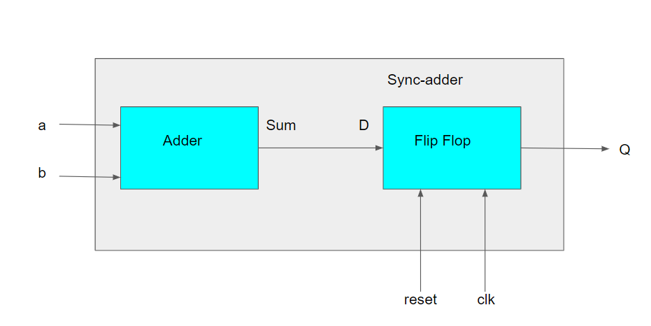
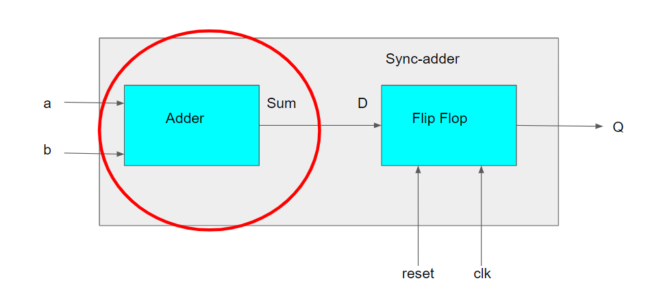
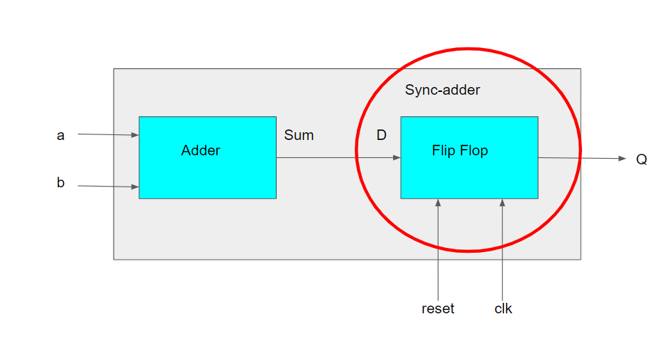
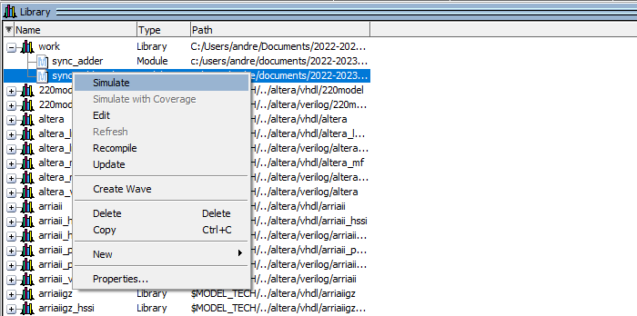
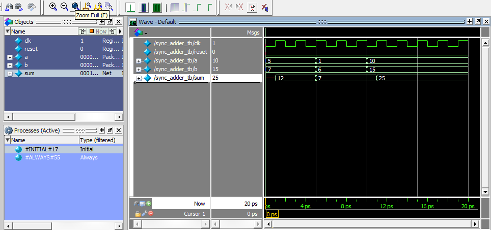

Gentle Intro
Author: Yehowshua Immanuel, Updated by Andrew Kim
PDF VersionThis is a practice lab meant to get you started with the basic concepts needed for future labs.
Instead of copying and pasting text included in this lab, you can download all the files below here.
Background Information¶
What is RTL or HDL?¶
A Hardware Description Language(HDL) is purely that. It merely describes hardware both structurally and functionally in the form of code. There are a couple types of HDLs, digital and mixed(digital+analog). This class deals with digital HDLs such as VHDL which you should have seen in ECE2031 (Digital Design Laboratory).
The most common HDLs include VHDL and Verilog. In the labs, we will use mostly Verilog. This can be a good reference for verilog: https://www.asic-world.com/verilog/veritut.html . If you want additional help with verilog, here is another primer that is helpful Verilog primer
The digital subset of HDL is usually referred to as Register Transfer Logic(RTL). RTLs aren't very useful by themselves. Typically, they might be passed to a synthesizer which reduces the RTL into a gate list that describes all the connections between various gates. A gate list is more commonly known as a netlist.
Synthesizers¶
There are different kinds of synthesizers. Some synthesizer frameworks target FPGAs while others target physical fabrication or VLSI. In VLSI, RTL is just the first step in a long laborious sequence of tasks that usually results in a finished physical chip.
All synthesizers typically support both VHDL and Verilog. Writing Verilog or VHDL is very primitive however, so it is not uncommon to use a higher level language to generate Verilog (I heard somewhere that Perl is sometimes used in industry to generate Verilog).
Higher Level Languages and Simulation¶
Using a higher level language can make complex tasks such as generating an out-of-order, multi-cache, multi-issue, pipelined processor easier.
TestBench or TestBeds¶
After you write your HDL that creates a circuit, you will need something else to test the functionality. Testbenches are HDL code written to test another HDL module (device under test or DUT). Testbenchess can output data to be analyzed as well as automatically test if the values are correctly generated.
Questions¶
Q1¶
What is the first thing that happens when you turn on your processor?
Please refer to page 25, section 5.2.4 of the MIPS32 Manual Volume III 1.
Q2¶
Computer programs can have many different sub-routines spread amongst different files. RTLs like verilog are no different. But instead of sub-routines, textual representations of physical hardware can be separated into distinct components called modules.
Below we have a synchronous adder module.

module sync_adder(Q, a, b, clk, reset);
input wire clk, reset;
input wire [7:0] a;
input wire [7:0] b;
output reg [7:0] Q;
reg [7:0] sum;
wire [7:0] D;
always @(*)
sum = a+b;
assign D = sum;
always @(posedge clk)
if (reset == 1)
Q <= 0;
else
Q <= D;
endmoduleLet's break this up¶
module sync_adder(Q, a, b, clk, reset);
input wire clk, reset;
input wire [7:0] a;
input wire [7:0] b;
output reg [7:0] Q;These are the definitions of the input and output of the whole module.
reg [7:0] sum;
wire [7:0] D;
always @(*)
sum = a+b;assign D = sum;assign change the value of the left hand side as soon as the the right had side changes.

always @(posedge clk)
if (reset == 1)
Q <= 0;
else
Q <= D;Q2.1¶
What is the difference between wire and reg?
Q2.2¶
How do wire and reg compare to System Verilog's logic?
Q2.3¶
What do you think happens when we assert reset?
Q3¶
Now lets simulate the Verilog adder from above. Go to https://fpgasoftware.intel.com/?product=modelsim_ae#tabs-2 and make an account. Then make sure you select the "lite" edition and release "20.1.1". Download "ModelSim-Intel FPGA Edition (includes Starter Edition)"
Opening verilog in ModelSim¶
Download the lab0_files.zip. Unzip it and then place it in a directory. Navigate to the directory using ModelSim's command line. First, use the command cd c:/ to get to your main C: drive.
Compiling verilog¶
You can run do init.do which will create a design library. Then running do compile.do will compile the sync adder and the test bench. You will see a "work" folder. Open it and right click on sync_adder and click simulate. Right clicking on each w

Run
add wave -position insertpoint sim:/sync_adder_tb/*
The waves will be added to the simulator. Running the command
run -a
will run all and you will see waveforms pop up (you may have to close a text editor window). It will look like this

(Hint: clicking the Zoom Full or F will fit the signals in your window. Also you can right click on the waves and change the Radix. The a, b, and sum signals are changed to decimal in the image)
sync_adder_tb.v¶
Lets look at what the test bench does. This section breaks up the sync_adder_tb.v file.
module sync_adder_tb;
//signals needed to test functionality of sync adder
reg clk, reset;
reg [7:0] a;
reg [7:0] b;
wire [7:0] Q;
//creating a sync adder and connecting signals
sync_adder DUT(
.clk(clk),
.reset(reset),
.a(a),
.b(b),
.Q(Q)
); This first part creates a test bench module. Included is hardware that will interact with the sync_adder DUT (Device Under Test). Then the hardware in the module is connected to the DUT.
initial // initial block runs only once
begin
clk = 0;
//Simple test
a = 5;
b = 7;
reset = 0;
#5
//self-checking
a = 1;
b = 6;
reset = 0;
#5
if (Q != 7) $display("1+6 failed");
//self-checking
a = 10;
b = 15;
reset = 0;
#5
if (Q != 0) $display("10+15 is not 0!");The next part assert values to test the DUT. You can see the values for a, b, and reset are being set. The first test is a simple test where the result has to be verified manually. The next two checks show a method to self-check the result. The text in $display() will come onto the command line if the statement is true. You should see one of these statements in your command line after simulating. This section runs once and from begin to end consecutively.
always
#1 clk = ~clk;The last always block runs all the time and changes the clock value.
Q3.1 modify the files¶
Now modify the testbench above to do 4+5=9 with self checking. Also write verilog to test the reset functionality of the module.
Recompile your verilog and fix any errors that pop up. Rerun the simulation. Include a screenshot of the new waveform with your lab.
notes¶
Congratulations!! You just wrote your first testbench. A testbench allows you to test your RTL before you deploy it to a chip or FGPA, and before you mix it with other RTL.